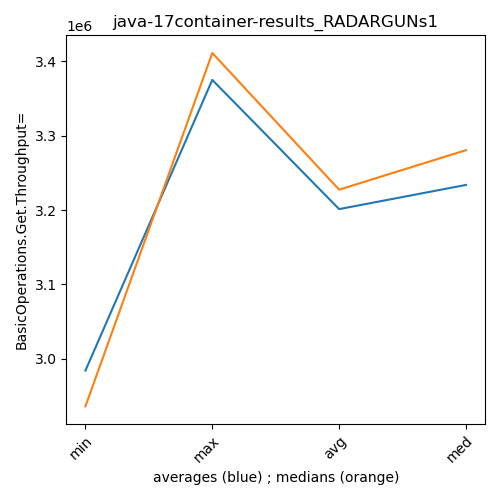
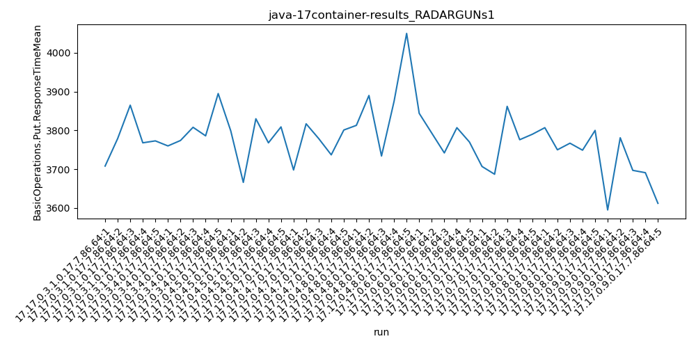
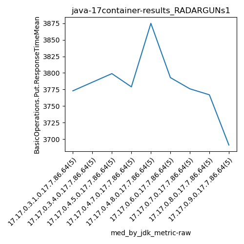

java-17 RADARGUNs1
Context at bottom
/home/jvanek/git/benchmarks-in-nested-virtualisation-toolchain/final_results/container_results/container-results_J2DBENCH
java-17
RADARGUNs1
/home/jvanek/git/benchmarks-in-nested-virtualisation-toolchain/final_results/container_results/container-results_RADARGUNs3
java-17
RADARGUNs1
/home/jvanek/git/benchmarks-in-nested-virtualisation-toolchain/final_results/container_results/container-results_RADARGUNs1
java-17
RADARGUNs1
container-results_RADARGUNs1
- container-results_RADARGUNs1 - throughput get
- container-results_RADARGUNs1 - throughput put
- container-results_RADARGUNs1 - response mean time get
- container-results_RADARGUNs1 - response mean time put
container-results_RADARGUNs1 - throughput get
Expected number of java-17 JDKs: 9
1st avgmed_alljdks_metric:
/home/jvanek/git/benchmarks-in-nested-virtualisation-toolchain/final_results/result_processing.py /home/jvanek/git/benchmarks-in-nested-virtualisation-toolchain/final_results/container_results/container-results_RADARGUNs1 BasicOperations.Get.Throughput= False
values: [2864801, 3149692, 3351355, 3280509, 3360035, 2766577, 3133205, 2804369, 3280090, 2935985, 3165765, 3192331, 3347857, 3355312, 3276735, 3280548, 3014452, 3190373, 3380336, 3050175, 2991387, 2818102, 3329872, 2842155, 2993234, 3303689, 3044319, 3388639, 3337757, 3094288, 3358801, 3366892, 3267768, 3321349, 3100867, 3335145, 3344078, 3084513, 3374915, 3302339, 3411316, 3411192, 3405113, 3418311, 3229023]

Expected number of iterations: 5
final number of values: 45 out of 45
Pass rate: 100.0%
values: (2766577, 3418311, 3201234.8, 3280090)

** accuracy from all jdks and runs
more is better
MIN: 2766577
MAX: 3418311
AVG: 3201234.8
MED: 3280090
Relative differences 1:
MIN-MAX: 19.0 %
MIN-AVG: 14.0 %
MIN-MED: 16.0 %
MAX-MIN: -24.0 %
MAX-AVG: -7.0 %
MAX-MED: -4.0 %
AVG-MED: 2.0 %
stored to java-17.properties. sort | uniq that!
2nd avgmed_by_jdk_metric:
values: [3201278.4, 2984045.2, 3267600.0, 3183176.8, 2994950.0, 3233738.4, 3283135.4, 3288198.0, 3374991.0]

values: [3280509, 2935985, 3276735, 3190373, 2991387, 3303689, 3321349, 3335145, 3411192]

values: (2984045.2, 3374991.0, 3201234.8, 3233738.4)
values: (2935985, 3411192, 3227373.777777778, 3280509)

** accuracy from all jdks where runs were avged
more is better
MIN: 2984045.2
MAX: 3374991.0
AVG: 3201234.8
MED: 3233738.4
Relative differences 1:
MIN-MAX: 12.0 %
MIN-AVG: 7.0 %
MIN-MED: 8.0 %
MAX-MIN: -13.0 %
MAX-AVG: -5.0 %
MAX-MED: -4.0 %
AVG-MED: 1.0 %
stored to java-17.properties. sort | uniq that!
** accuracy from all jdks where runs were medianed
more is better
MIN: 2935985
MAX: 3411192
AVG: 3227373.777777778
MED: 3280509
Relative differences 1:
MIN-MAX: 14.0 %
MIN-AVG: 9.0 %
MIN-MED: 11.0 %
MAX-MIN: -16.0 %
MAX-AVG: -6.0 %
MAX-MED: -4.0 %
AVG-MED: 2.0 %
stored to java-17.properties. sort | uniq that!
container-results_RADARGUNs1 - throughput put
Expected number of java-17 JDKs: 9
1st avgmed_alljdks_metric:
/home/jvanek/git/benchmarks-in-nested-virtualisation-toolchain/final_results/result_processing.py /home/jvanek/git/benchmarks-in-nested-virtualisation-toolchain/final_results/container_results/container-results_RADARGUNs1 BasicOperations.Put.Throughput= False
values: [716196, 787451, 837914, 820007, 839930, 691612, 783342, 701091, 820006, 733956, 791433, 798119, 836977, 838752, 819125, 820132, 753596, 797590, 845078, 762584, 747903, 704485, 832441, 710601, 748298, 825952, 761059, 847185, 834434, 773519, 839717, 841706, 817009, 830310, 775160, 833831, 836062, 771170, 843772, 825571, 852874, 852789, 851334, 854533, 807296]
Expected number of iterations: 5
final number of values: 45 out of 45
Pass rate: 100.0%
values: (691612, 854533, 800308.9333333333, 820006)

** accuracy from all jdks and runs
more is better
MIN: 691612
MAX: 854533
AVG: 800308.9333333333
MED: 820006
Relative differences 1:
MIN-MAX: 19.0 %
MIN-AVG: 14.0 %
MIN-MED: 16.0 %
MAX-MIN: -24.0 %
MAX-AVG: -7.0 %
MAX-MED: -4.0 %
AVG-MED: 2.0 %
stored to java-17.properties. sort | uniq that!
2nd avgmed_by_jdk_metric:
values: [800299.6, 746001.4, 816881.2, 795796.0, 748745.6, 808429.8, 820780.4, 822081.2, 843765.2]

values: [820007, 733956, 819125, 797590, 747903, 825952, 830310, 833831, 852789]

values: (746001.4, 843765.2, 800308.9333333333, 808429.8)
values: (733956, 852789, 806829.2222222222, 820007)

** accuracy from all jdks where runs were avged
more is better
MIN: 746001.4
MAX: 843765.2
AVG: 800308.9333333333
MED: 808429.8
Relative differences 1:
MIN-MAX: 12.0 %
MIN-AVG: 7.0 %
MIN-MED: 8.0 %
MAX-MIN: -13.0 %
MAX-AVG: -5.0 %
MAX-MED: -4.0 %
AVG-MED: 1.0 %
stored to java-17.properties. sort | uniq that!
** accuracy from all jdks where runs were medianed
more is better
MIN: 733956
MAX: 852789
AVG: 806829.2222222222
MED: 820007
Relative differences 1:
MIN-MAX: 14.0 %
MIN-AVG: 9.0 %
MIN-MED: 10.0 %
MAX-MIN: -16.0 %
MAX-AVG: -6.0 %
MAX-MED: -4.0 %
AVG-MED: 2.0 %
stored to java-17.properties. sort | uniq that!
container-results_RADARGUNs1 - response mean time get
Expected number of java-17 JDKs: 9
1st avgmed_alljdks_metric:
/home/jvanek/git/benchmarks-in-nested-virtualisation-toolchain/final_results/result_processing.py /home/jvanek/git/benchmarks-in-nested-virtualisation-toolchain/final_results/container_results/container-results_RADARGUNs1 BasicOperations.Get.ResponseTimeMean True
values: [1055, 1097, 1077, 1100, 1061, 1109, 1077, 1084, 1160, 1069, 1075, 1094, 1044, 1064, 1077, 1121, 1104, 1160, 1063, 1091, 1144, 1058, 1092, 1104, 1104, 1092, 1097, 1054, 1063, 1092, 1056, 1089, 1098, 1077, 1082, 1050, 1086, 1096, 1058, 1101, 1023, 1029, 1048, 1020, 1003]

Expected number of iterations: 5
final number of values: 45 out of 45
Pass rate: 100.0%
values: (1003, 1160, 1079.9555555555555, 1082)

** accuracy from all jdks and runs
more is worse
MIN: 1160
MAX: 1003
AVG: 1079.9555555555555
MED: 1082
Relative differences 1:
MIN-MAX: 16.0 %
MIN-AVG: 7.0 %
MIN-MED: 7.0 %
MAX-MIN: -14.0 %
MAX-AVG: -7.0 %
MAX-MED: -7.0 %
AVG-MED: -0.0 %
stored to java-17.properties. sort | uniq that!
2nd avgmed_by_jdk_metric:
values: [1078.0, 1099.8, 1070.8, 1107.8, 1100.4, 1079.6, 1080.4, 1078.2, 1024.6]

values: [1077, 1084, 1075, 1104, 1104, 1092, 1082, 1086, 1023]

values: (1024.6, 1107.8, 1079.9555555555555, 1079.6)
values: (1023, 1104, 1080.7777777777778, 1084)

** accuracy from all jdks where runs were avged
more is worse
MIN: 1107.8
MAX: 1024.6
AVG: 1079.9555555555555
MED: 1079.6
Relative differences 1:
MIN-MAX: 8.0 %
MIN-AVG: 3.0 %
MIN-MED: 3.0 %
MAX-MIN: -8.0 %
MAX-AVG: -5.0 %
MAX-MED: -5.0 %
AVG-MED: 0.0 %
stored to java-17.properties. sort | uniq that!
** accuracy from all jdks where runs were medianed
more is worse
MIN: 1104
MAX: 1023
AVG: 1080.7777777777778
MED: 1084
Relative differences 1:
MIN-MAX: 8.0 %
MIN-AVG: 2.0 %
MIN-MED: 2.0 %
MAX-MIN: -7.0 %
MAX-AVG: -5.0 %
MAX-MED: -6.0 %
AVG-MED: -0.0 %
stored to java-17.properties. sort | uniq that!
container-results_RADARGUNs1 - response mean time put
Expected number of java-17 JDKs: 9
1st avgmed_alljdks_metric:
/home/jvanek/git/benchmarks-in-nested-virtualisation-toolchain/final_results/result_processing.py /home/jvanek/git/benchmarks-in-nested-virtualisation-toolchain/final_results/container_results/container-results_RADARGUNs1 BasicOperations.Put.ResponseTimeMean True
values: [3708, 3779, 3865, 3768, 3773, 3760, 3774, 3808, 3786, 3895, 3799, 3666, 3830, 3768, 3809, 3698, 3817, 3779, 3737, 3801, 3813, 3890, 3734, 3875, 4050, 3844, 3793, 3742, 3807, 3770, 3707, 3687, 3862, 3776, 3790, 3807, 3750, 3767, 3749, 3800, 3595, 3781, 3697, 3691, 3612]

Expected number of iterations: 5
final number of values: 45 out of 45
Pass rate: 100.0%
values: (3595, 4050, 3777.9777777777776, 3779)

** accuracy from all jdks and runs
more is worse
MIN: 4050
MAX: 3595
AVG: 3777.9777777777776
MED: 3779
Relative differences 1:
MIN-MAX: 13.0 %
MIN-AVG: 7.0 %
MIN-MED: 7.0 %
MAX-MIN: -11.0 %
MAX-AVG: -5.0 %
MAX-MED: -5.0 %
AVG-MED: -0.0 %
stored to java-17.properties. sort | uniq that!
2nd avgmed_by_jdk_metric:
values: [3778.6, 3804.6, 3774.4, 3766.4, 3872.4, 3791.2, 3764.4, 3774.6, 3675.2]

values: [3773, 3786, 3799, 3779, 3875, 3793, 3776, 3767, 3691]

values: (3675.2, 3872.4, 3777.977777777778, 3774.6)
values: (3691, 3875, 3782.1111111111113, 3779)

** accuracy from all jdks where runs were avged
more is worse
MIN: 3872.4
MAX: 3675.2
AVG: 3777.977777777778
MED: 3774.6
Relative differences 1:
MIN-MAX: 5.0 %
MIN-AVG: 2.0 %
MIN-MED: 3.0 %
MAX-MIN: -5.0 %
MAX-AVG: -3.0 %
MAX-MED: -3.0 %
AVG-MED: 0.0 %
stored to java-17.properties. sort | uniq that!
** accuracy from all jdks where runs were medianed
more is worse
MIN: 3875
MAX: 3691
AVG: 3782.1111111111113
MED: 3779
Relative differences 1:
MIN-MAX: 5.0 %
MIN-AVG: 2.0 %
MIN-MED: 3.0 %
MAX-MIN: -5.0 %
MAX-AVG: -2.0 %
MAX-MED: -2.0 %
AVG-MED: 0.0 %
stored to java-17.properties. sort | uniq that!
/home/jvanek/git/benchmarks-in-nested-virtualisation-toolchain/final_results/container_results/container-results_DACAPO
java-17
RADARGUNs1
/home/jvanek/git/benchmarks-in-nested-virtualisation-toolchain/final_results/container_results/container-results_SPECJBB
java-17
RADARGUNs1
/home/jvanek/git/benchmarks-in-nested-virtualisation-toolchain/final_results/container_results/container-results_JMH
java-17
RADARGUNs1
pass rates:
container-results_RADARGUNs1=100.0%
Context:
- container_results
- RADARGUNs1